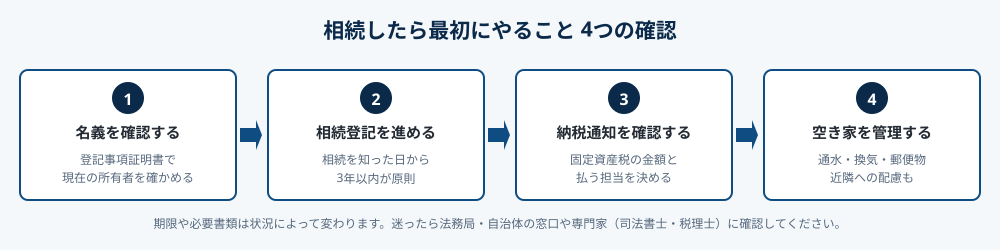

親が亡くなり実家を相続すると、「まず何をすればいいのか」が分かりにくいものです。片付けや売却を考える前に、期限や義務のある手続きから押さえる必要があります。この記事では、最初に確認したい「名義」「税金」「管理」の3つに絞って基本を整理します。個別の事情で扱いが変わるため、判断に迷う部分は専門家や自治体の窓口で確認してください。
最初にやることは3つ

1. 名義を確認し、相続登記を進める
まず、法務局で登記事項証明書を取得し、実家の土地と建物が現在誰の名義になっているかを確認します。そのうえで、相続人への名義変更（相続登記）を進めます。相続登記は2024年4月1日から義務化されており、相続によって不動産を取得したことを知った日から3年以内に申請することが原則です。正当な理由がないのに怠ると、10万円以下の過料の対象になる場合があります。なお、義務化より前に相続した不動産も対象で、その場合は2027年3月31日までが期限とされています。
相続人が複数いる場合は、遺産分割協議で誰が実家を取得するかを決めてから登記するのが基本です。話し合いが長引く場合は、自分が相続人であることを申し出る「相続人申告登記」で申請義務を果たした扱いにできる制度もあります。必要書類や進め方は状況で異なるため、法務局の窓口に相談するか、手続きを司法書士に依頼するのが確実です。
2. 固定資産税の納税通知を確認する
固定資産税は、毎年1月1日時点の所有者に課税され、春ごろに納税通知書と課税明細書が届きます。相続した後は相続人が納税を引き継ぐため、通知書が届いたら、対象の物件と税額を確認し、相続人のうち誰が代表して払うかを決めておきます。故人宛てに届くこともあるので、郵便物は見落とさないようにしてください。納付が遅れると延滞金が発生する場合があります。相続人の代表者の届出など、自治体ごとに手続きが異なる部分もあるため、不明な点は自治体の税務窓口や税理士に確認してください。
3. 空き家の最低限の管理を始める
誰も住まなくなった実家でも、管理は相続人の責任です。最低限の管理として、定期的な換気と通水（水道を流して配管のにおいや漏れを確認する）、雨漏りや外壁の異常の確認、郵便物の回収、庭木や雑草の手入れが挙げられます。近隣へは、相続したことと連絡先をひと言伝えておくと、台風や水漏れなどの異常に気づいてもらえます。管理が行き届かない状態が続くと、自治体から「特定空家等」に指定され、固定資産税の住宅用地の特例（税の軽減）が外れる場合があります。遠方で通うのが難しい場合は、空き家管理サービスの利用も選択肢ですが、内容と費用は事業者で異なるため、契約前に確認してください。
最初の確認リスト
相続したら最初に確認する6項目
- 登記事項証明書を取り、土地と建物の現在の名義を確認したか
- 相続登記の期限（相続を知った日から3年以内）を家族で共有したか
- 固定資産税の納税通知書を保管し、払う担当を決めたか
- 水道・電気・ガスの契約がどうなっているかを確認したか
- 郵便物の転送届を出し、故人宛ての通知を見落とさない形にしたか
- 近隣に相続の挨拶と連絡先を伝えたか
このリストは「手続きと維持」の確認です。家の中の片付けそのものは、期限のある手続きの見通しが立ってからでも遅くありません。片付けの進め方は実家じまいの進め方の記事にまとめています。
売却・賃貸・解体の判断は、後でよい
実家を「売る・貸す・解体する・当面持つ」の判断は、名義と税金の確認が済んでからで構いません。そもそも名義が故人のままでは、売却や解体の契約を進めることができません。また、相続税の申告が必要かどうか、空き家の売却で使える税の特例があるかどうかは、家族構成や取得の経緯で変わります。焦って決めるよりも、判断材料をそろえてから、必要に応じて税理士や司法書士などの専門家に相談する進め方が安全です。親が元気なうちに整理を始める場合との違いは、生前整理と遺品整理の違いの記事も参考にしてください。
あわせて読みたい
手続きの見通しが立ったら、次は家の中の片付けです。進め方の全体像と、元気なうちに進める整理との違いを押さえておくと計画が立てやすくなります。
実家じまいの進め方 生前整理と遺品整理の違いよくある質問
- 相続登記をしないとどうなりますか
- 相続登記は2024年4月から義務化され、相続で不動産を取得したことを知った日から3年以内の申請が原則です。正当な理由がないのに怠ると、10万円以下の過料の対象になる場合があります。2024年4月より前に相続した不動産も対象で、2027年3月31日が期限とされています。また、名義が故人のままでは売却や解体の契約も進めにくくなります。個別の判断は法務局の窓口や司法書士に確認してください。
- 遺産分割の話し合いがまとまらなくても義務を果たせますか
- 「相続人申告登記」という制度があり、自分が相続人であることを法務局に申し出れば、相続登記の申請義務を果たしたものとして扱われます。ただし、これは正式な相続登記ではないため、遺産分割がまとまった後には改めて相続登記が必要です。利用できるかどうかは状況によって異なるので、法務局の窓口で確認してください。
- 固定資産税は誰が払うのですか
- 相続した不動産の固定資産税は、相続人が引き継いで納めるのが基本です。相続人が複数いる場合は、代表して払う人を決めておくと行き違いが防げます。故人宛てに納税通知書が届いたら、放置せず自治体の税務窓口に相談してください。代表者の届出を求められる場合もあります。
- 空き家になった実家の管理はどこまで必要ですか
- 最低限として、定期的な換気と通水、雨漏りや配管の異常の確認、郵便物の回収、庭木や雑草の手入れが挙げられます。管理が行き届かない状態が続くと、建物の傷みが進むだけでなく、自治体から「特定空家等」に指定され、固定資産税の住宅用地の特例が外れる場合があります。頻度や方法は立地と建物の状態で異なるため、自治体の空き家窓口などで確認してください。